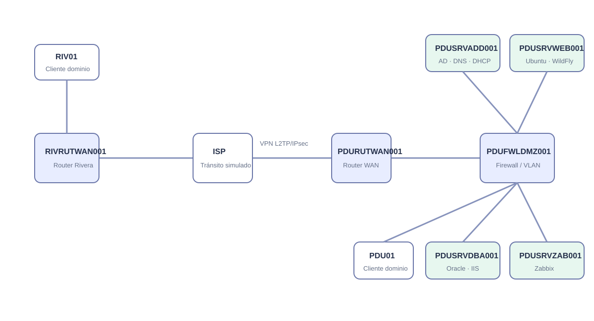

Laboratorio y topología GNS3
El proyecto PFT_2026-1 modela trece nodos y doce enlaces.

Inventario de nodos
| Nodo | Tipo | Rol |
|---|---|---|
| PDUSRVADD001 | VirtualBox | Active Directory, DNS y DHCP |
| PDUSRVDBA001 | VirtualBox | Oracle Database e IIS |
| PDUSRVWEB001 | VirtualBox | Ubuntu y WildFly |
| PDUSRVZAB001 | VirtualBox | Zabbix |
| PDUFWLDMZ001 | MikroTik CHR | Firewall/DMZ y gateways de VLAN |
| PDURUTWAN001 | MikroTik CHR | Router WAN y servidor VPN |
| RIVRUTWAN001 | MikroTik CHR | Router Rivera y cliente VPN |
| PDUSWIACC001 / RIVSWIACC001 | Ethernet switch | Acceso LAN |
| PDU01 / RIV01 | VirtualBox | Clientes de dominio |
| ISP | QEMU | Tránsito simulado |
| PC1 | VPCS | Pruebas rápidas |
Arranque recomendado
- 1Iniciar ISP y routers WAN.
- 2Iniciar firewall PDU y switches.
- 3Iniciar servidor Active Directory/DNS/DHCP.
- 4Iniciar Oracle y luego WildFly.
- 5Iniciar Zabbix.
- 6Iniciar estaciones cliente y validar conectividad.
Validación mínima
ping 192.168.80.10
nslookup servidorad8.8soft.utec.uy
ping 192.168.85.10
curl -I http://192.168.85.10:8080/ochoschool.website/